Bestiary
Fifty creatures, five per world. Health and damage already include the world's multiplier: health grows by 35% and damage by 20% with every world you go down.
1Toxic JungleToxin
-
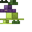
Sporeling
Attacks in groups and adds toxin.
- Health
- 16
- Damage
- 3
Spores -
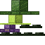
Root Creeper
Waits underground, then roots you.
- Health
- 24
- Damage
- 4
Roots -
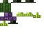
Snare Flower
Immobile, pulls you toward it.
- Health
- 30
- Damage
- 5
SporesRootsrare -
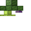
Spore Bearer
Flees and leaves toxic clouds.
- Health
- 20
- Damage
- 3
Spores -
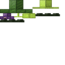
Chitin Guard
Elite. A shield you must break from behind.
- Health
- 40
- Damage
- 6
Chitin
2Giant VeinsHeat
-
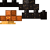
Ash Miner
Digs to reach you.
- Health
- 30
- Damage
- 6
Ash Ingot -
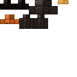
Living Vein
Nesting: splits into shards.
- Health
- 49
- Damage
- 6
Giant Ore -
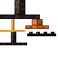
Rock Salamander
Crosses lava and raises your heat.
- Health
- 27
- Damage
- 7.2
Blazing Rock -
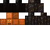
Dead Smith
Heats its hammer before striking.
- Health
- 40
- Damage
- 7.2
Ash Ingot -
Slag Golem
Elite. Hardens when it cools down.
- Health
- 61
- Damage
- 8.4
Blazing Rock
3Endless DungeonLocks
-
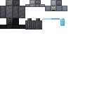
Jailer
Calls allies and closes doors.
- Health
- 51
- Damage
- 7.2
Dungeon Key -
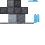
Sentinel
Throws chains from above.
- Health
- 55
- Damage
- 7.2
Sealed Fragment -
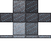
Living Lock
Pretends to be a locked door.
- Health
- 44
- Damage
- 5.8
Dungeon Key -
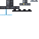
Dungeon Rat
Slips under bars, attacks in swarms.
- Health
- 18
- Damage
- 4.3
Sealed Fragment -
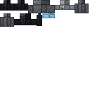
Executioner
Elite. Charges and cages you.
- Health
- 82
- Damage
- 11.5
Sealed Fragment
4Storm ArchipelagoWind
-
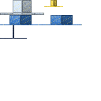
Wind Ray
Glides and pushes you off the islands.
- Health
- 44
- Damage
- 8.6
Ray Membrane -
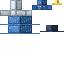
Storm Bird
Dives during storms.
- Health
- 39
- Damage
- 8.6
Storm Essence -
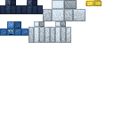
Island Warden
Guards a crystal and slams the area.
- Health
- 98
- Damage
- 10.4
Celestial Crystal -
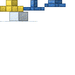
Cloud Mine
Floats, then explodes near you.
- Health
- 34
- Damage
- 12.1
Storm Essence -
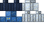
Sky Harpooner
Elite. Drags you toward the void.
- Health
- 59
- Damage
- 8.6
Celestial Crystal
5Lightless DeepNoise
-
Blind Prowler
Hunts by sound. Sneak.
- Health
- 86
- Damage
- 14.5
Shadow Shard -
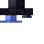
Glow Devourer
Snuffs out your lights.
- Health
- 73
- Damage
- 8.3
Shadow Shard -
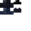
Echo
Mimics sounds to lure you.
- Health
- 53
- Damage
- 10.4
Diamond Fragment -
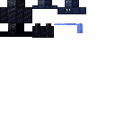
Eyeless Watcher
Still while you are silent.
- Health
- 100
- Damage
- 12.4
Diamond Fragment -
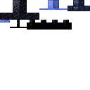
Shadow Mother
Elite, nesting: releases shadows.
- Health
- 146
- Damage
- 14.5
Shadow Shard
6Upside RealmGravity
-
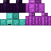
Reflection
Copies your last attack.
- Health
- 90
- Damage
- 14.9
Inverted Crystal -
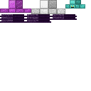
Ceiling Walker
Walks on every surface.
- Health
- 117
- Damage
- 12.4
Unstable Alloy -
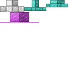
Unstable Sphere
Flips gravity around it when it dies.
- Health
- 63
- Damage
- 19.9
Unstable Alloy -
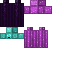
Inverted Strider
Fights upside down, strikes through platforms.
- Health
- 135
- Damage
- 14.9
Inverted Crystal -
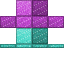
Broken Mirror
Elite, nesting: reflects damage.
- Health
- 179
- Damage
- 17.4
Inverted Crystal
7Pressure OceanOxygen
-
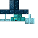
Abyssal Hunter
Circles, then charges from below.
- Health
- 157
- Damage
- 20.9
Abyssal Salt -
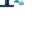
Blade School
Fast swarm, drains oxygen.
- Health
- 73
- Damage
- 11.9
Abyssal Salt -
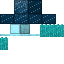
Pressure Jelly
Raises pressure around it.
- Health
- 121
- Damage
- 14.9
Pressure Pearl -
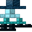
Bell Crab
Nesting: shelters smaller crabs.
- Health
- 242
- Damage
- 17.9
Pressure Pearl -
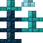
Trench Eel
Elite. Bursts from walls and grabs you.
- Health
- 182
- Damage
- 23.9
Pressure Pearl
8Hastened SeasonsSeason
-
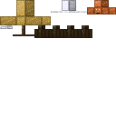
Seasonal Creature
Changes attacks with the season.
- Health
- 180
- Damage
- 21.5
Season Fragment -
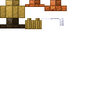
Hourglass Elder
Slows everything around it.
- Health
- 245
- Damage
- 17.9
Temporal Sand -
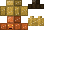
Dusk Shade
Appears only when day turns to night.
- Health
- 196
- Damage
- 25.1
Temporal Sand -
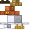
Child of Minutes
Grows stronger during the fight.
- Health
- 114
- Damage
- 14.3
Season Fragment -
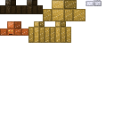
Hour Keeper
Elite. Repeats its strikes on a cycle.
- Health
- 368
- Damage
- 28.7
Temporal Sand
9Restless GroundTremor
-
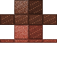
Crawling Block
Disguises itself as terrain.
- Health
- 331
- Damage
- 25.8
Terrain Fragment -
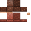
Mimic
Pretends to be a chest, an ore or a door.
- Health
- 287
- Damage
- 30.1
Terrain Fragment -
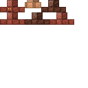
Foundation Eater
Eats unanchored blocks.
- Health
- 309
- Damage
- 21.5
Terrain Fragment -
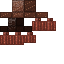
Earth Hand
Bursts from the ground and grabs you.
- Health
- 265
- Damage
- 34.4
Terrain Fragment -
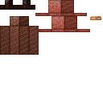
Walking Column
Elite, nesting: falls and opens chasms.
- Health
- 496
- Damage
- 34.4
Terrain FragmentTerrain Heartrare
10The Giant WorkshopSynthesis
-
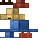
Giant Sporeling
Splits into groups of Sporelings.
- Health
- 447
- Damage
- 36.1
Artisan's Thread -
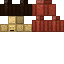
Ash Titanid
Raises the heat of the area.
- Health
- 536
- Damage
- 31
Artisan's Thread -
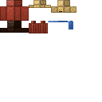
Colossal Jailer
Locks whole sections of the workshop.
- Health
- 596
- Damage
- 36.1
Artisan's Thread -
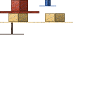
Titan Ray
Pushes you with huge gusts.
- Health
- 417
- Damage
- 41.3
Artisan's Thread -
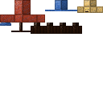
Colossus Prowler
Elite. Hunts by sound in the dark.
- Health
- 745
- Damage
- 41.3
Artisan's Shard
The peoples
Every world has its own people, with villages, traders and quest givers. How they greet you depends on your karma. On the Surface, the Doll Peddler wanders between villages.
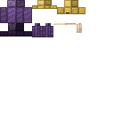
Doll PeddlerThe Surface- GathererToxic Jungle
- Free MinerGiant Veins
- PrisonerEndless Dungeon
- Lighthouse FolkStorm Archipelago
- Silent OneLightless Deep
- Free ReflectionUpside Realm
- DiverPressure Ocean
- EphemeralHastened Seasons
- AnchoredRestless Ground
- Old ApprenticeThe Giant Workshop